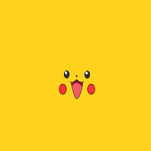
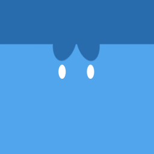
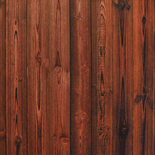

Oops ... your browser doesn't support the HTML5 canvas element
皮卡丘左移
皮卡丘右移
皮卡丘上移
皮卡丘下移
皮卡丘前进
皮卡丘后退
皮卡丘变大
皮卡丘变小
皮卡丘顺时针自转
皮卡丘逆时针自转
圆企鹅左移
圆企鹅右移
圆企鹅上移
圆企鹅下移
圆企鹅前进
圆企鹅后退
圆企鹅变大
圆企鹅变小
圆企鹅顺时针自转
圆企鹅逆时针自转
光源向上
光源向左
光源向右
光源向下
光源向前
光源向后
光源旋转1
光源旋转2
光照旋转1
光照旋转2
光照旋转3
正视图
后视图
俯视图
左视图
右视图
相机前进
相机后退
相机漫游
停止漫游
Use lighting


